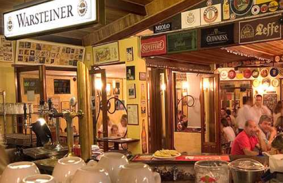
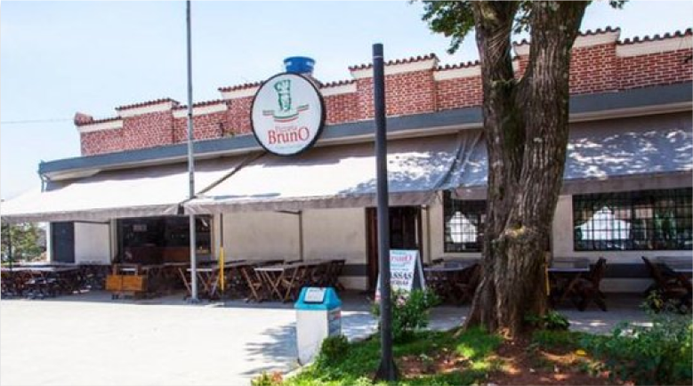

Por ser um bairro que conserva sua história, tem diversos restaurantes e bares com muita história para contar e atraindo muitos turistas por sua estrutura diferenciada e rústica.
Alguns dos seus mais conhecidos são:
Frangó
O Frangó é um bar que foi criado a mais de 30 anos atrás, em 1987, traz muito a estética de uma casa de interior, é uma ótima ideia para quem quer curtir uma noite com os amigos.
O tão conhecido bar, recebeu no ano de 2012 o prêmio de Melhor Carta de Cervejas de São Paulo. Diversas pessoas que vão nesse restaurante o chama de autêntico, simples, descontraído e aconchegante. Ele tem mais de 450 opções de cervejas, além de 6 opções de chopp, acompanhados com petiscos, como as famosas coxinhas, sequinhas, com recheio desfiado, salpicado por salsinha e com uma bolinha de catupiry.
Caso queira visitar o Frangó é uma experiencia maravilhosa e vale muito a pena!
Endereço: Largo da Matriz de Nossa Senhora do Ó, 168 - Freguesia do Ó, São Paulo - SP, 02925-040
Telefone: (011) 3932-4818
Pizzaria Bruno
A pizzaria Bruno foi fundada em 1980 e busca trazer uma vivência da tão amada época de São Paulo nos anos 40.
O lugar é um ótimo ponto turistico para aquelas famílias que querem um jantar gostoso e calmo.
O ambiente se divide em 3 áreas que acomoda mais de 200 pessoas com muito conforto, sendo elas:
SALÃO TÉRREO: acomoda 150 pessoas, podendo reservar de segunda à quinta e nos fins de semana quando for para fazer eventos.
SALÃO SUPERIOR: tem capacidade para 50 pessoas, podendo ser reservadas todos os dias da semana.
ÁREA EXTERNA: tem um bar com algumas mesas na calçada para aqueles que gostam do vai-e-vem de São Paulo.
Endereço: Largo Da Matriz De Nossa Senhora Do Ó,87 - Freguesia Do Ó, São Paulo - SP - 02925-040.
Telefone:(011) 3932-2261
O Alemão
O Alemão é um bar e restaurante inaugurado a 21 anos. A ideia do restaurante nasceu por um bisneto de Alemães que queria trazer o primeiro restaurante dessa cultura para a região.
Tem diversos pratos típicos, cervejas de várias marcas, tanto nacionais como importadas.
O restaurante suporta até 200 pessoas tranquilamente e é de fácil acesso a deficientes.
Endereço: Largo Da Matriz De Nossa Senhora Do Ó,134 - Freguesia Do Ó, São Paulo - SP - 02925040
Telefone:(011) 3932-0872

Ciccarino Restaurante e Pizzaria
A tradição da culinária italiana demonstrada em comida de verdade, feita com cuidado e amor. Alinhando no cardápio pratos de culinária brasileira com sabor! Sendo eles pratos bem servidos, satisfazendo os que querem dar "aquela repetidinha"!
Garçons gentis e cozinha perfeita! Ambiente gostoso e convidativo, que nos faz ter vontade de ir sempre! Vinho, cerveja, peça uma sugestão para acompanhamento!
Endereço: Largo da Matriz de Nossa Senhora do Ó, 139 Freguesia do Ó - São Paulo - SP
Telefone: (11) 3931-6786